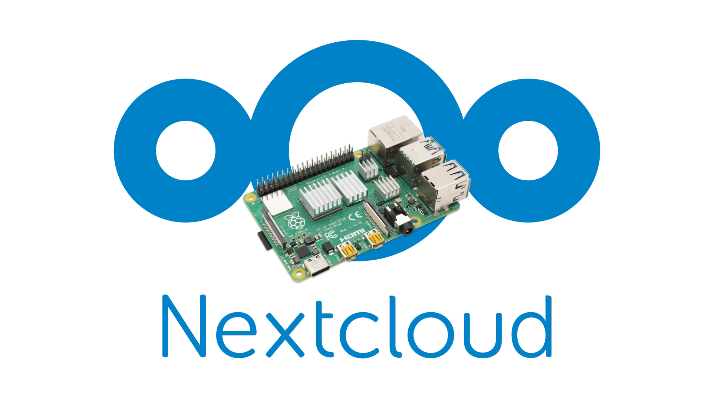

<div class="container-fluid">
    <div class="container-fluid text-center shadow">
        <div class="container-fluid py-3" id="hanging-icons">
            <h1 class="text-center" style="font-weight: 700; color: #fffffc;">PiCloud</h1>
        </div>
        <div class="row align-items-start g-5 p-5">
            <div class="col text-center">
                <div class="card" style="width: 100%;">
                    <div class="card-body">
                        
                    </div>
                </div>
                <h5 class="fs-2 text-start" style="color: #fffffc;">Descrizione del progetto</h5>
                <p class="fs-5 text-start" style="color: #fffffc;">Il progetto consiste nell'implementazione di un
                    sistema di cloud domestico
                    privato
                    utilizzando la Raspberry Pi 4 e la distribuzione Linux specializzata NextCloudPi. Questa soluzione
                    offre un'alternativa sicura e controllata ai servizi di cloud pubblici, consentendo all'utente di
                    archiviare, sincronizzare e condividere file in un ambiente domestico o aziendale.
                </p>
                <h5 class="fs-2 text-start" style="color: #fffffc;">Componenti Utilizzati</h5>
                <p class="fs-5 text-start" style="color: #fffffc;"><strong>Raspberry Pi 4</strong>: una singola scheda computer con
                    potenza sufficiente per
                    gestire le esigenze di un server di cloud personale. La sua versatilità e basso consumo energetico
                    lo rendono ideale per applicazioni di questo genere.
                </p>
                <p class="fs-5 text-start" style="color: #fffffc;"><strong>NextCloudPi</strong>: una distribuzione Linux ottimizzata per
                    Raspberry Pi che integra
                    il software Nextcloud, una popolare piattaforma di cloud self-hosted. NextCloudPi semplifica
                    l'installazione e la gestione di Nextcloud sulla Raspberry Pi, fornendo una configurazione
                    predefinita ottimizzata per le risorse hardware limitate della scheda.
                </p>
                <h5 class="fs-2 text-start" style="color: #fffffc;">Benefici del progetto</h5>
                <p class="fs-5 text-start" style="color: #fffffc;"><strong>Privacy e Controllo</strong>: Con il cloud domestico privato,
                    l'utente mantiene il controllo completo sui propri dati senza affidarsi a fornitori di servizi
                    esterni.
                </p>
                <p class="fs-5 text-start" style="color: #fffffc;"><strong>Risparmio sui Costi</strong>: eliminando la dipendenza dai
                    servizi di cloud pubblici a
                    pagamento, l'utente può risparmiare notevolmente sui costi a lungo termine.
                </p>
                <p class="fs-5 text-start" style="color: #fffffc;"><strong>Personalizzazione e Flessibilità</strong>: L'utente ha la
                    possibilità di
                    personalizzare completamente il proprio server cloud, aggiungendo funzionalità e applicazioni
                    secondo le proprie esigenze.
                </p>
            </div>
        </div>
    </div>